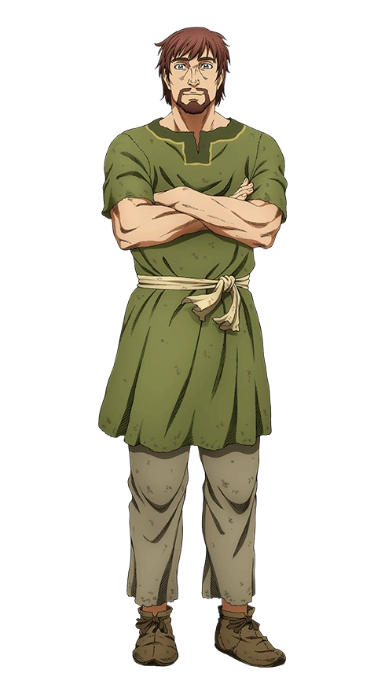
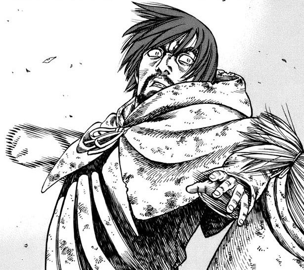

Einar
About Einar
Einar is a former slave, who worked in a field in Northern England up until it was burned down during a Viking raid, afterwards becoming a slave. He met Thorfinn at Ketil's farm and later becomes close friends with him. He also grew very close to Arnheid and Sverkel on the farm.
Appearance
Einar is a tall man with reddish brown hair and brown eyes. He is 20 years old when he is introduced in 1015. After many years of hard labor in the fields, Einar develops a muscular stature. Einar has a mole on the left side of the bridge of his nose.
Personality
The events at Ketil's farm revealed Einar to be one of Thorfinn's more straightforward companions. He tends to react emotionally. Although outspoken, he demonstrates a great understanding of the people around him and especially of Thorfinn's struggles.
Acknowledging his lack of combat prowess, Einar vows to help Thorfinn in his own way and is an ever welcoming companion. He's kinda fussy and tried to be friendly to Thorfinn. A softer side to Einar is evident as he can easily get embarrassed - noted by his reactions and blushing to whenever Arnheid compliments him.
Abilities
Einar has few abilities when it comes to combat, but he is quite large in stature and musculature. He also has experience farming and doing various other hands on tasks.